ユーザーアカウントの作成¶
ユーザーアカウントは次のいずれかの方法で作成します。
ユーザー自身が作成する
管理者（ root ）が作成する
ユーザー自身が作成¶
ブラウザーで GitLab サーバーにアクセス → Register をクリック
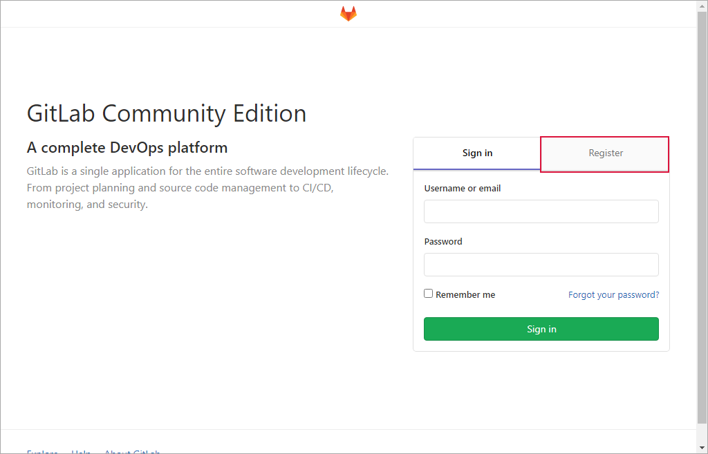各値を入力 → Register をクリック
次の内容でアカウントを作成します。 Username の入力後に緑色で “Username is available.” が表示されたら使用可能なユーザー名です。
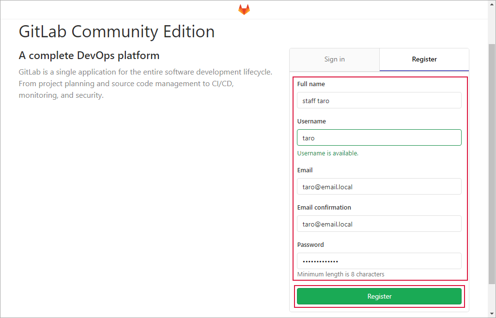項目
入力値
備考
Full name
staff taro
ユーザーのフルネーム
Username
taro
ログインアカウント
Email
Email confirmation
“Email” と同じ値
Password
アカウントのパスワード
アカウントの作成終了
Register のクリック後にユーザーアカウントが作成され、そのままサインインします。
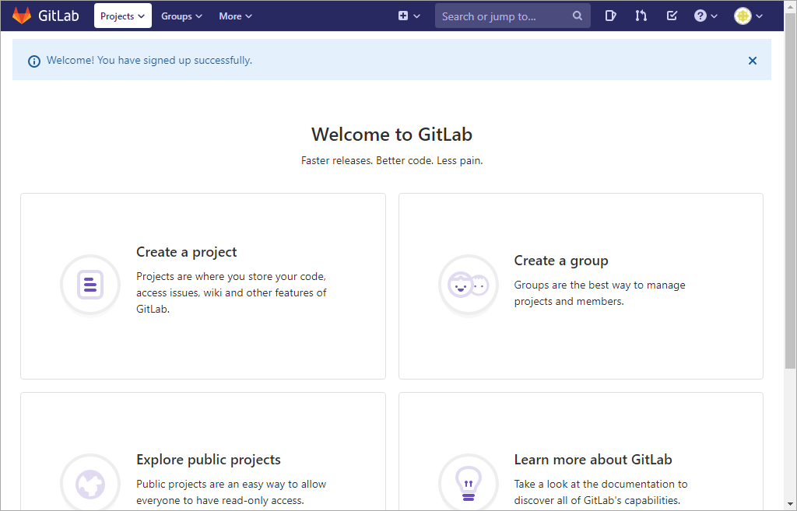
{kind=link}
{kind=link}
{kind=link}
管理者（ root ）が作成¶
管理者がユーザーアカウントを作成します。
GitLab サーバーに root アカウントでサインイン
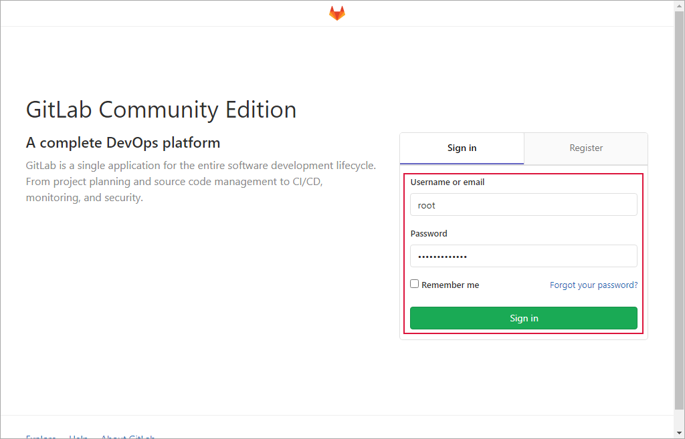Add people をクリック
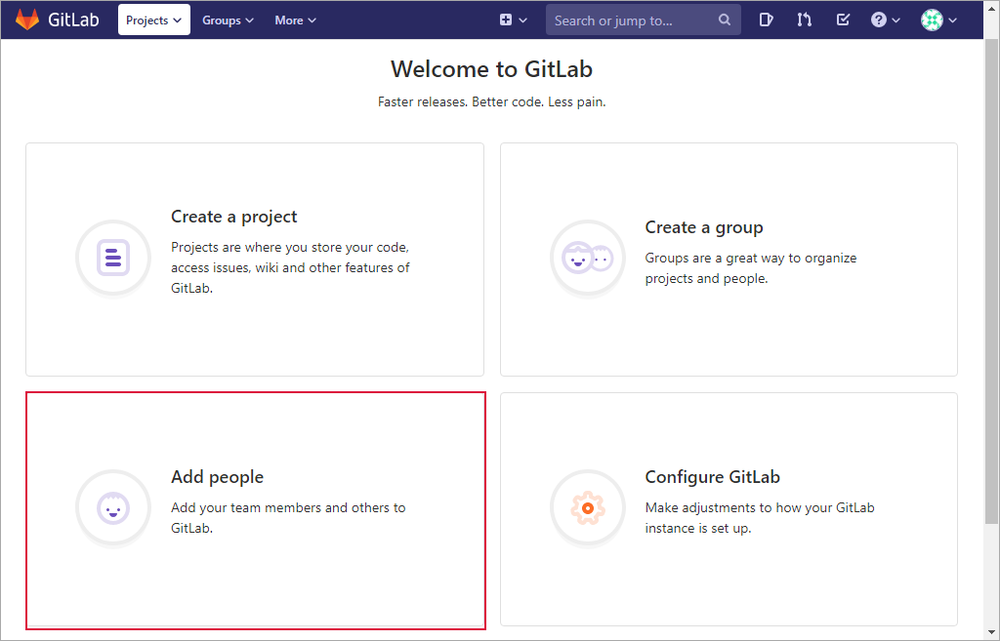各値を入力
次の内容でアカウントを作成します。
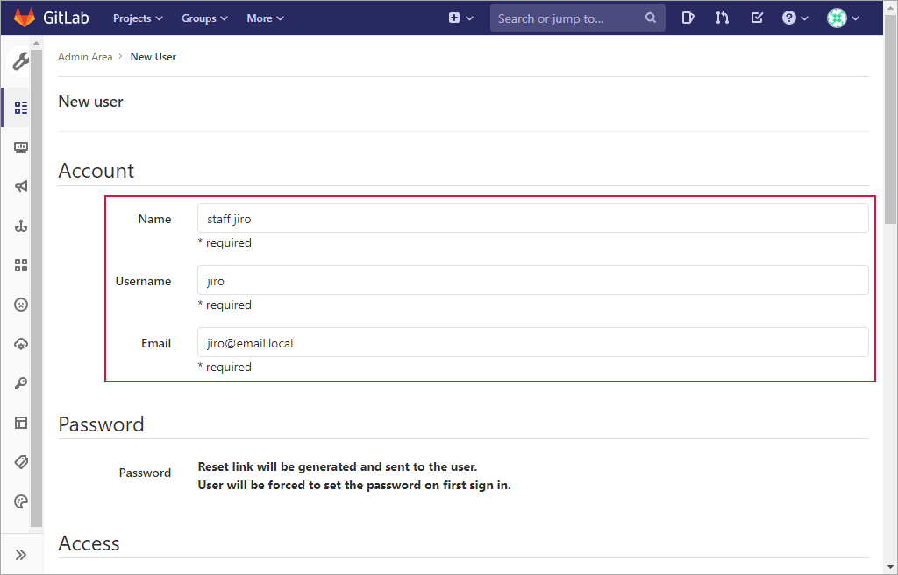項目
入力値
備考
Name
staff jiro
ユーザーのフルネーム
Username
jiro
ログインアカウント
Email
画面をスクロール → Create user をクリック
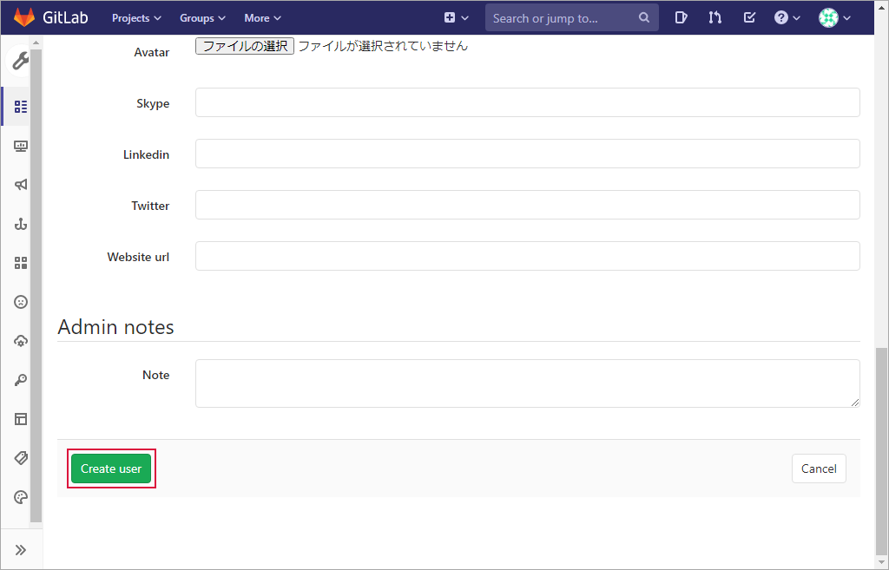“User was successfully created.” のメッセージを確認
画面右上の Edit をクリック
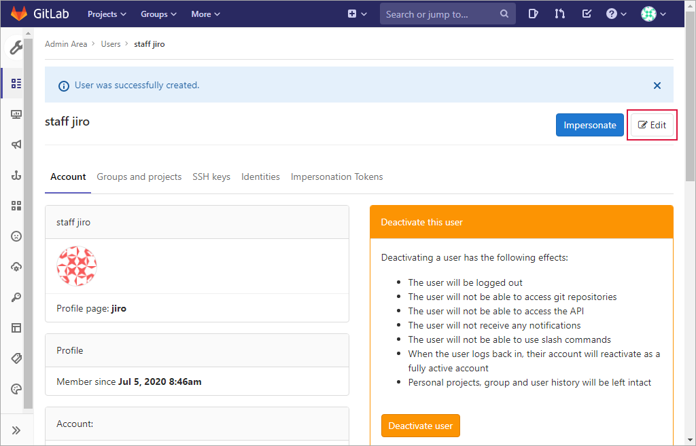各値を入力 → Save changes をクリック
作成したアカウントのパスワードを設定します。ここで設定したパスワードは初期パスワードです。このアカウントで初めてログインするとき、本パスワードに変更します。
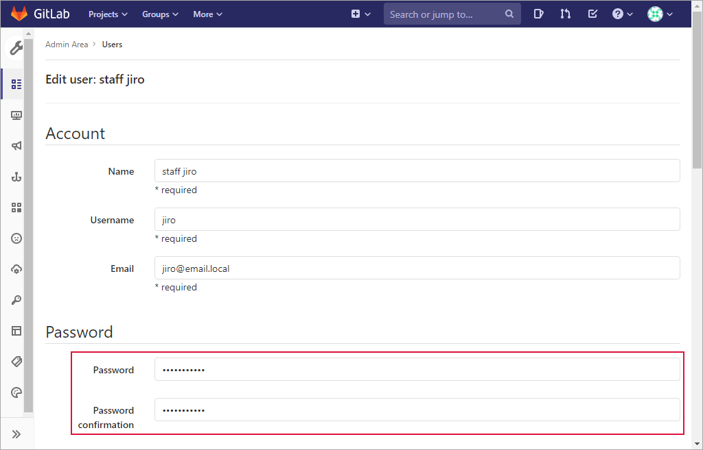項目
入力値
備考
Password
ユーザーの初期パスワード
Password confirmation
“Password” と同じ値を入力
画面をスクロール → Save changes をクリック
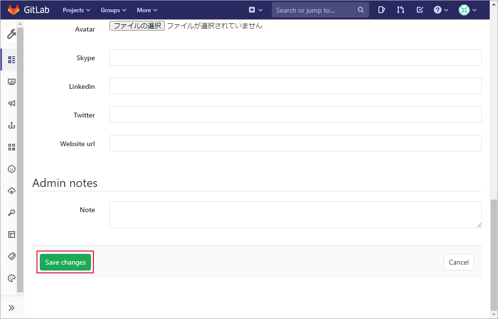“User was successfully updated.” のメッセージを確認 → アカウントの作成終了
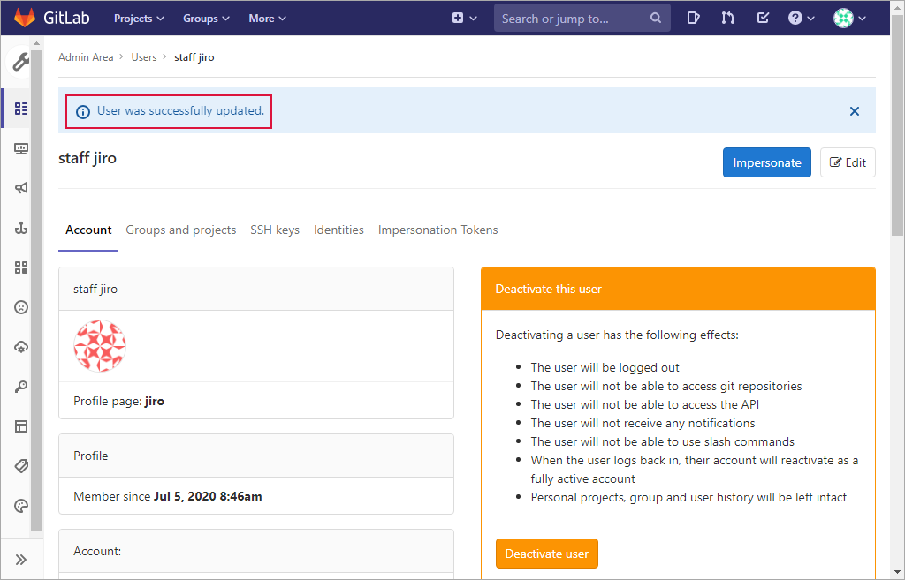
{kind=link}
{kind=link}
{kind=link}
{kind=link}
{kind=link}
{kind=link}
{kind=link}
{kind=link}
{kind=link}
サインインテスト¶
作成したアカウントで GitLab サーバーにサインインできるかテストします。
ユーザー自身が作成したアカウント¶
{kind=link}
{kind=link}
管理者が作成したアカウント¶
管理者が作成したアカウントの場合、次の順序で作業を行います。
本パスワードの設定
ログインテスト
次の値を入力 → Sign in をクリック
項目
入力値
備考
Username or email
jiro
Password
初期パスワード
次の値を入力 → Set new password をクリック
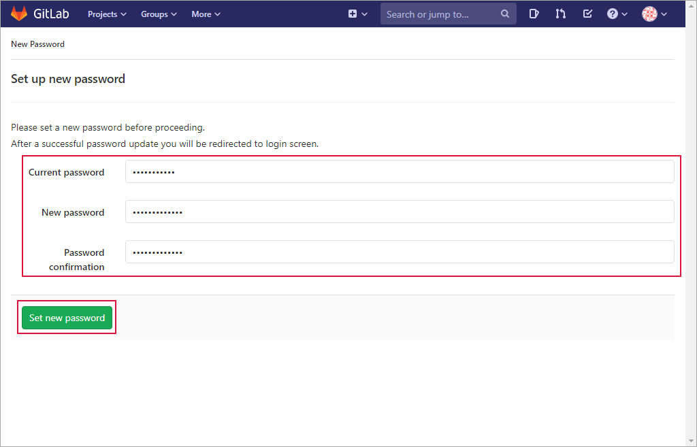項目
入力値
備考
Current password
仮パスワード
New password
本パスワード
Password confirmation
“New password” と同じ値
“Password successfully changed” の表示を確認
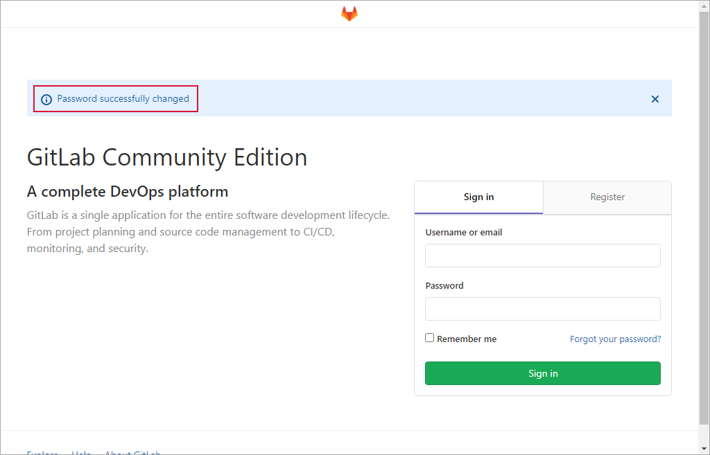次の値を入力 → Sign in をクリック
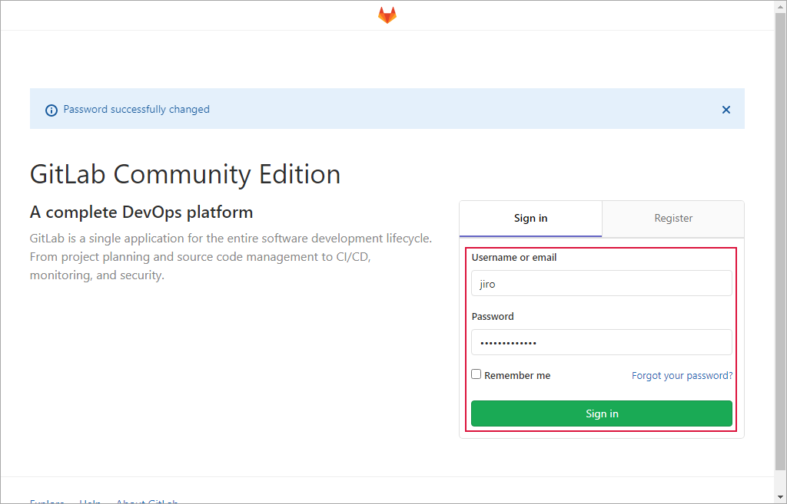項目
入力値
備考
Username or email
jiro
Password
本パスワード
サインイン終了
{kind=link}
{kind=link}
{kind=link}
{kind=link}
{kind=link}